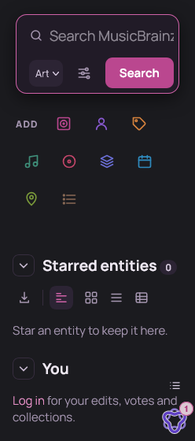
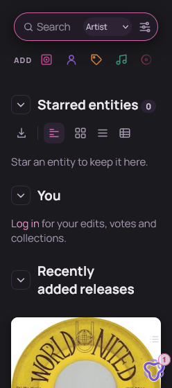
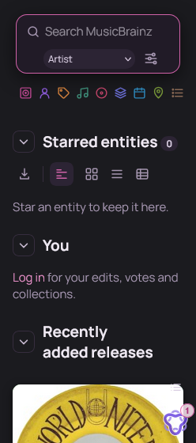
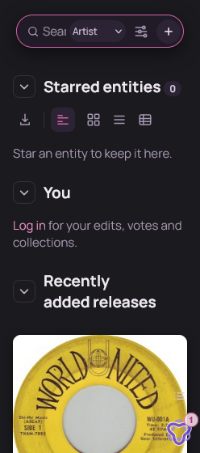
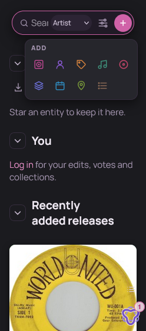

Homepage top on a phone (248 px, how 145% font size lays out)
Real Event Horizon page at your phone's width, dark, with each option's CSS applied. Common to A, B and C: the red Search button is gone (Enter, or the keyboard's Go, submits), and the gap under the icons is smaller.

NowBox on two lines with a big Search button; ADD icons 40 px on three rows.

A · one line, swipeSearch is one rounded line: lens, “Search”, a small type chip, filter. ADD is one row of 34 px icons; swipe left/right for the rest, the right edge fades to show there's more.

B · all icons fitSearch keeps the full placeholder, type and filter on a small second line. All 9 ADD icons fit in one row, smaller (24 px), no label, no swipe.

C · + menu, closedSearch on one line plus a round + button; no ADD row at all. Most minimal, but the input gets narrow (“Sear…”).

C · + menu, openTapping + opens the ADD icons as a small panel.